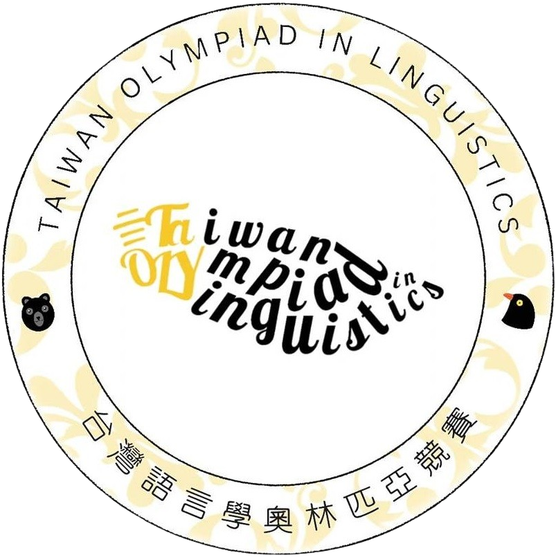

BLOCK 1
台灣語奧介紹與未來發展
提案文件
台灣語奧與新時代語言科學人才培育藍圖
語奧發展歷程、跨領域人才培育策略與制度化推動構想。
升學制度
IOL 全球國手獎勵與升學制度報告
各國語奧國手享有的大學升學優惠與獎勵制度比較圖表。
學術調查
全球百大名校語言學系現況調查
頂尖大學語言學科系設置、研究方向與招生現況調查報告。
PDF 報告
各國語奧升學制度化比較
跨國比較語言學奧賽與大學升學管道銜接機制。
PDF 報告
頂尖大學語言學科系調查
全球頂尖大學語言學相關科系的完整調查資料。
BLOCK 2
解題講義
構詞句法題
語意題
主要講義
語意學問題與文化：解題策略
語意分析核心概念、文化語意框架，以及語奧語意題解題方法論，含多語種範例。
解題模擬
語義學解題模擬：Manx & Kalam
曼島語（Manx）與 Kalam 語義分類題的動態互動解題演示。
動態模擬
高棉語語義分類解題模擬
Khmer 語詞彙語義分類題的互動式解題思維動態演示。
語音與聲韻題
培訓講義
緬甸語外來詞：培訓式動態講解
TOL 2019 緬甸語外來詞題型完整培訓，含音韻規律分析與逐步解題過程。
練習工具
緬甸語外來詞發音練習
互動式緬甸語外來詞發音練習，強化音韻對應規則的直覺掌握。
解答
Kalam 語音題解答
Kalam 語言語音學解題完整解答與分析說明。
歷屆試題
TOL 2019 第 6 題
台灣語言學奧賽 2019 年語音題原題。
認知題
預告
認知語言學解題單元
概念隱喻、範疇化、原型理論等認知語言學核心概念的解題講義，敬請期待。